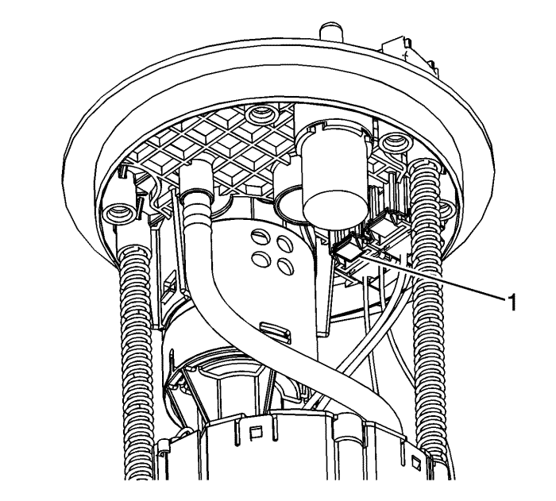
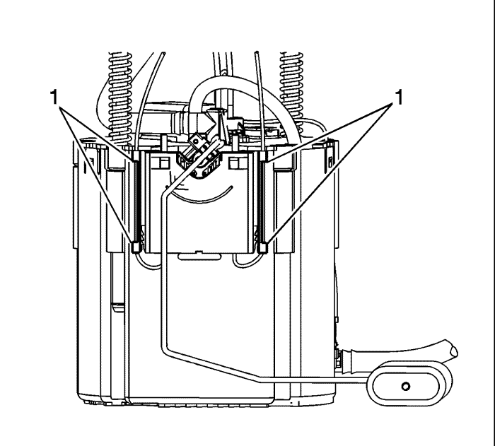
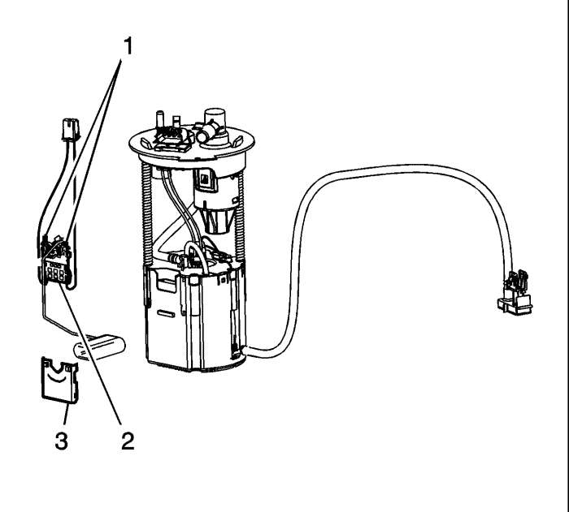

Sustitución del sensor del nivel de combustible
Procedimiento de desmontaje
Importante: Hay 2 conjuntos de sensores de nivel de combustible en el depósito de combustible. Hay uno ubicado en cada módulo de bomba de combustible. Los sensores de nivel de combustible NO son los mismos para cada uno de los módulos de la bomba de combustible.

- Desmonte el módulo de la bomba de combustible. Consultar Sustitución del módulo de la bomba del combustible del depósito de combustible .
- Desemborne el conector eléctrico (1) del sensor de nivel de combustible de la cubierta del módulo de la bomba de combustible del depósito de combustible.

- Extraiga el cableado del sensor de nivel de combustible de detrás de los sistemas de fijación (1) acoplados al depósito del módulo de la bomba de combustible del depósito de combustible.

- Delice el sensor de nivel de combustible hacia arriba y extraiga el sensor del módulo de la bomba de combustible del depósito de combustible.
- Coloque el sensor de nivel de combustible sobre una superficie de trabajo limpia.
- Presione las fijaciones (1) del sensor de nivel de combustible para extraer el sensor de la cubierta.
- Retire el sensor del nivel de combustible (2) de la cubierta (3).
Procedimiento de montaje
- Monte la cubierta del sensor de nivel de combustible (3) sobre el sensor de nivel de combustible (2).
- Asegúrese de que las fijaciones (1) del sensor de nivel de combustible están bien acopladas a la cubierta.
- Coloque el sensor de nivel de combustible en el módulo de la bomba de combustible del depósito de combustible y deslice el sensor hacia abajo hasta alcanzar su posición.
- Emborne el conector eléctrico (1) del sensor de nivel de combustible en la cubierta del módulo de la bomba de combustible del depósito de combustible.
- Monte el cableado del sensor de nivel de combustible detrás de los sistemas de fijación (1) acoplados al depósito del módulo de la bomba de combustible del depósito de combustible.
- Monte el módulo de la bomba de combustible. Consultar Sustitución del módulo de la bomba del combustible del depósito de combustible .
| © Copyright Chevrolet Europe. All rights reserved |